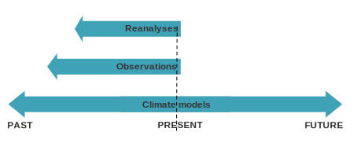
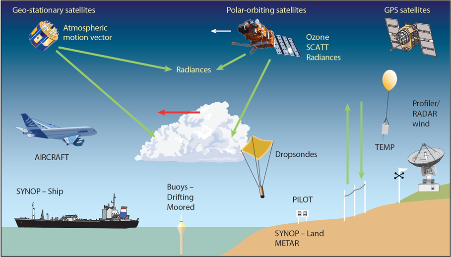
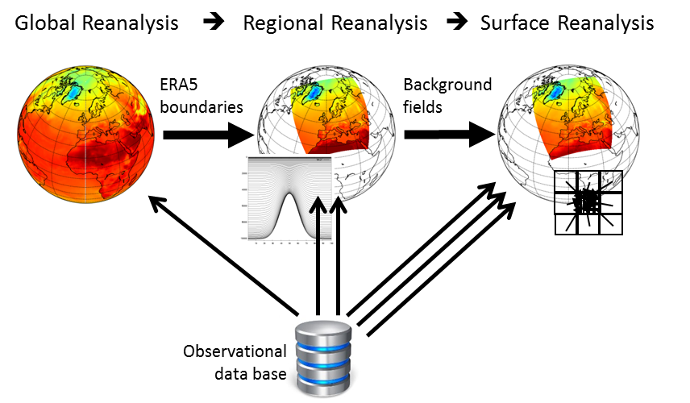

Climate data sources#
Working with climate data, we will encounter the following definitions: observations, reanalyses, and climate models. What do they mean, and what are the differences?
These represent three major categories of data sources, and the choice of which one to use depends on the time period we are interested in.

Observations#
The observations measure the variables at specific times and places. They can be obtained with in-situ technologies, such as ground stations, or with remote technologies, such as satellite and radars.
The observations are defined direct when the variables are measured directly, and indirect when they are inferred from other observations.

Observation components of the Global Observing System - ECMWF
Climate models#
The second category of data sources comprises climate models, which are mathematical representations used to comprehend and forecast climate systems. These models vary, each designed to examine distinct facets of the climate.
With the advancement of computing capabilities over recent decades, these models have also grown more complex.
These models don’t predict specific events at particular times or locations, but are used for assessing how average and extreme climate conditions are expected to shift.

The model grid#
Even if the computing power has increased, it is however impossible to compute the climate state of every possible points on the planet. What the models do is to compute the climate state of regularly spaced points, creating de facto a grid with each point at the center of its cell. The value is considered to be an average of the grid cell.
When dealing with climate data, we have to consider that climate is related not only to the Earth surface (that we have already seen how it can be represented through a system of coordinates), but also to atmospheric conditions. So we have to add a third dimension to our system, named ‘height’ or ‘pressure’ and also divided into cells.
However, climate evolves over time, so we must consider it as a fourth dimension.
The effectiveness of a climate model is influenced by its resolution, which includes both spatial and temporal aspects. Spatial resolution determines the dimensions of the grid cells within the model, measurable in degrees of latitude and longitude or kilometers. Temporal resolution, on the other hand, defines the frequency of computations for various quantities within the model. Frequently, a single model can operate at varying resolutions, and the selection of resolution depends on the particular issue being investigated.
Reanalyses#
Climate reanalyses combine historical observations with models to create time series for various climate variables. Reanalyses are highly utilized in the geophysical sciences since they offer a detailed account of the climate as observed over recent decades.
The quality of a reanalysis depends on the resolution of its model as well as the quality of observations.
ERA5 is the latest climate reanalysis produced by ECMWF. It is available from 1940 and continues to be extended forward in time.

TODO: add information about drought data.#
Tip
If you are interested to learn more about climate data sources, you can watch the three ECMWF’s course:
Or you can visit the webpages:
Observation components of the Global Observing System of the World Meteorological Organization (WMO).
Basics of Global Climate Models of the USDA Climate Hubs
Climate reanalysis of Copernicus